完整操作手册
按功能模块组织的十节手册：每节先讲“这一步在解决什么”，再讲按什么顺序点， 最后把截图里的每一块界面元素逐条解释清楚。图号写作“图 4-3”，表示第 04 节第 3 张图。
三端分工与读法
在同一个客户的实例里，三个端连的是同一份数据，但当前功能边界不同。手机只提供闪念胶囊与左滑操作； 平板和 PC 是完整工作台，平板把“列表 + 详情”并排放，PC 再宽一档、卡片排成四列。 同一个“项目列表”，在平板上是左侧浮出的抽屉，在 PC 上也是抽屉，只是背后的详情页更宽。
交付链路与三端分工
| 步骤 | 你在这里做什么 | 主力端 | 对应模块 |
|---|---|---|---|
| 接住 | 走在路上想起一句，按住「说」说一条；不能出声的场合点「写」打字。都不选项目、不标紧急度 | 手机 | 02 闪念胶囊 |
| 归位 | 把胶囊转成待办，选对应项目、定一档紧急程度 | 平板 PC | 03 项目 · 04 待办 |
| 出方案 | 把碎片摆成一张有层级的脑图，拖节点改父子关系 | 平板 PC | 05 脑图 |
| 派活 | 待办正文（连图片一起）＋ 挂载的脑图 ＋ 客户原话，导出成一段 Markdown，粘进 Agent 的输入框 | 平板 PC | 04 待办 · 导出 |
| 收尾 | 勾完成、推项目阶段；在概览回看这个周期交了多少，给客户的说明从记录里导 | 平板 PC | 01 概览 · 03 项目 |
先认清三种“壳”
| 端 | 导航壳 | 列表怎么出现 | 详情怎么出现 |
|---|---|---|---|
| 手机 | 单列全屏，一个页面一件事 | 直接就是整页内容 | 进入下一页，返回键回列表 |
| 平板 | 底部五个 tab：概览 / 项目 / 待办 / 脑图 / 我的 | 从左侧浮出抽屉，盖住详情但不满屏 | 右侧常驻，切换列表项时右侧跟着换 |
| PC | 最左一条图标栏（只有图标＋小字） | 同样是左侧抽屉，宽度固定、高度铺满 | 同样在右侧，卡片排四列 |
全局只有一个悬浮入口
平板与 PC 的每个页面右下角都挂着同一枚黄色徽标按钮（圆角方形的勾选框图标）。 点它，闪念胶囊的抽屉会盖到最前，键面同时换成黑色麦克风——再点一次就开始录音。 手机端没有这枚按钮：那一端的整屏就是胶囊流，底部那颗「说」本身就是入口，不需要第二个。
概览
概览是唯一一个“只看不改”的页面：上半屏用一张热力日历回答“最近我到底干了多少”， 下半屏把每个项目的待办按四档紧急度摊开，回答“活堆在哪个项目里”。要区分周期累计与当前存量：累计活动用于回看，未完成数与四档积压会随完成、删除和改档变化， 所以它更像体温计，不像待办清单。
操作流程
- 进入概览：平板点底部第一个 tab「概览」，PC 点最左侧图标栏第一项（图标下方写着“概览”）。 对应图 1-1、图 1-2
- 先看右下那行日期：它把“今天”和“今天产出”写在一行里——日期星期、第几周，以及当天 创建 / 完成 / 胶囊三个计数和它们的合值。
- 再看日历的颜色：一格是一天，颜色越深当天越忙。当前这一天的格子带一个虚线角标； 想看更早的日子就向左滑动日历，右下角那行小字会告诉你“共 30 周 · 当前显示最近 14 周”。
- 往下滚到「项目待办统计」：每个项目一张小卡，卡上四档数字分别是紧急 / 中等 / 不紧急 / 留置的条数。 哪一格红得多，活就堵在哪儿。
- 要看细节就点项目卡：进入该项目详情页（见 03 项目），那边才是能改的地方。
界面元素
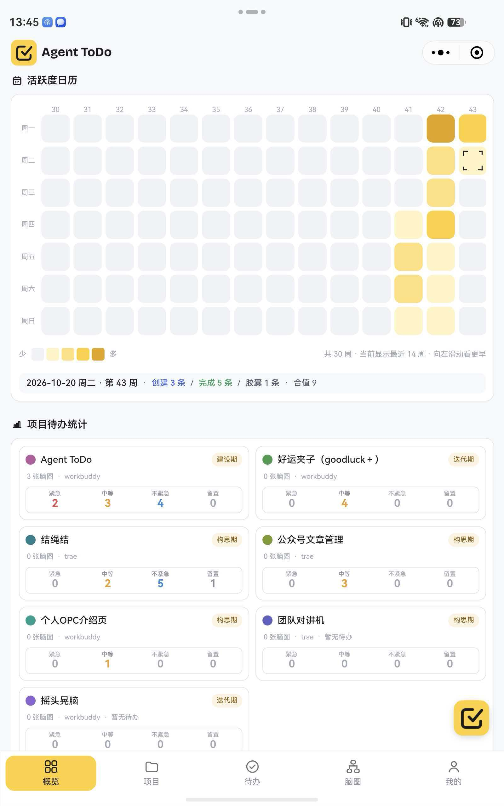
- 区块头
- 小图标＋「活跃度日历」/「项目待办统计」。图标只是分组标记，不可点。
- 列号 30–43
- 顶部的数字是周序号（第 30 周到第 43 周），一列一周。
- 周一…周日
- 左侧纵轴是星期。横看是“同一周过得怎么样”，竖看是“每周几最忙”。
- 颜色格子
- 一格一天，共 5 档：越深越忙。当前这天带虚线角标。
- 色阶图例
- 左下「少 → 多」五个小方块，对应 5 档热度，用来校准深浅。
- 周范围说明
- 右下小字：「共 30 周 · 当前显示最近 14 周 · 向左滑动看更早」——这是日历可以横滑的提示。
- 日期统计行
- 「2026-10-20 周二 · 第 43 周 · 创建 3 条 / 完成 5 条 / 胶囊 1 条 · 合值 9」。合值＝三项相加（3＋5＋1＝9），是日历格子的着色依据。
- 项目卡
- 色点＋项目名＋阶段标签；第二行「0 张脑图 · workbuddy」是脑图数与所属 agent。
- 四档数字
- 紧急（红）/ 中等（橙）/ 不紧急（蓝）/ 留置（灰）。这里只读，不能直接勾完成。

- 左侧图标栏
- 纵向五个图标：概览 / 项目 / 待办 / 脑图 / 我的。当前页用黄色方块＋墨色图标标出。
- 窗口标题栏
- 顶部「Agent-ToDo」＋右侧最小化 / 最大化 / 关闭，属于宿主窗口，不是应用功能。
- 列号 19–44
- PC 更宽，默认直接露出 26 周；平板是 14 周。
- 项目卡 4 列
- 一屏能扫完所有项目，找“哪个项目最红”比平板上快。
- 右下徽标
- 黄色圆角方块（勾选框图标）＝闪念胶囊的全局入口，任何页面都在。
闪念胶囊
这是一个先收进来、暂不归类的收集箱：记录时不用想项目、紧急度与归属，之后再编辑、导出、转待办或转脑图。 进来有两条入口：说——一条最长 60 秒，到点自动收，说不完就再录第二条；写——开会、地铁、 孩子睡了这类不能出声的场合，打字记下来，最多再挂一张截图。 列表是正序的——越早的越靠上，因为它是流水账，顺序本身带信息。整理留给后面三个出口：转待办、转脑图、删掉。
手机上：说一条
- 点底部那条黄色的「说」开始录——条面平时写着“点击开始录音”，一按下就变成倒计时。
- 说完再点一次（或点屏幕任意位置，或等 60 秒到点自动收）——气泡落在列表最下方，右下角带日期时间。
- 要改就左滑这一条：往左拖，右侧顶出三颗竖排的键——导出 / 编辑 / 删除。
- “导出”拿到的是这条气泡的文字，粘到哪儿都行；“编辑”改错别字（语音识别最容易错人名、项目名）；“删除”只从列表移除，不弹二次确认。

- 说
- 底部左侧那条长黄键：麦克风＋一个「说」字，靠右写着“点击开始录音”。走路、在车上、刚想到一句话时走这条。
- 写
- 黄条右侧那颗白底「写」。开会、地铁、旁边有人睡了就走这条（图 2-3）。
- 气泡
- 淡黄底卡片，左侧一道黄色竖引线，正文成段；右下灰色小字是记录时间。
- 正序
- 越早的记录越靠上，往下读就是“我当时的想法怎么一步步长出来的”。
- 右上胶囊
- 「···」与圆点是微信小程序原生菜单，不属于本应用。

- 00:59
- 秒数从 60 往下走，这就是全部进度反馈——没有波形、没有时长条。
- 轻点任意处
- 整屏都是停止层，点哪儿都停，连状态栏那一带也算。不用对准某颗键。
- 再点一次
- 提前结束录音，立刻开始转写；不用等倒计时走完。
- 录音态
- 「说」「写」两颗键这一帧都收起来，屏幕上的唯一动作是“停”。
手机上：写一条（不能出声的场合）
闪念偏偏最常发生在不能开口的时候。这条入口让“记下来”不必先有声音，也不必等到能说话才记 —— 写的和说的进同一条流水账，后面照样转待办、转脑图，没有第二条账本。
- 点底部那颗白胶囊「写」，面板从下面升起，标题「记一条闪念」。
- 想到什么就写什么：占位提示“想到什么就写什么，回头再整理…”，上限 600 字，字多了框内自己滚。
- 要留住现场就加截图：点虚线坑「加截图」选一张——一条胶囊最多挂 1 张；挂上后缩略图右下角是「更换」、右上角是 ✕。
- 写到一半想改成说：点「改成说」——已经写下的半句先存成一条再起录。切换输入方式不该丢字，代价是多出一条胶囊，这个取舍是有意的。
- 点「记下来」落进列表最下方。正文空着时这颗键是灰的。
- 写了字又想放弃：第一次点「取消」只算武装——键面变「丢弃」、升起一句“这段还没存下”，再点一次才真丢；三秒多不理它，自己退回「取消」。
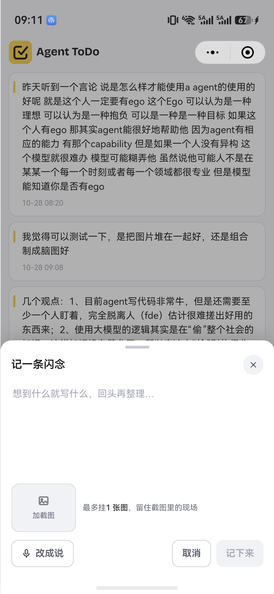
- 标题
- 「记一条闪念」。改已有的那条叫「编辑闪念」——“产生”与“修改”用两个词分开。
- 输入区
- 固定高度、框内自己滚。不留自适应高度：否则一句话写到第三行，下面的键就被顶出屏幕。
- 加截图
- 虚线坑，右边一句「最多挂 1 张图，留住截图里的现场」。挂上后变成缩略图：右下「更换」、右上 ✕。
- 改成说
- 左侧白底黑框那颗，不抢主键的位。点了先存半句再起录（见上面第 4 条）。
- 取消 / 记下来
- 右两颗。正文为空时「记下来」置灰；有内容时点「取消」先武装成「丢弃」。
手机上：改一条、删一条

这一屏的底部同框带上了新版入口——左边黄色「说」、右边白色「写」（图 2-1）。
- 导出
- 把这条的文字放进剪贴板，可以直接粘给 Agent 或别的应用。
- 编辑
- 改正文，用于修语音识别错字（人名、项目名、自造缩写最常错）。
- 删除
- 红底白字，从列表移除；误删可到平板 / PC 抽屉顶部的「已删除胶囊」里捞回来。
- 为什么竖排
- 一条气泡可能很长，三颗键横排会挤掉正文；竖着叠还让最重的删除落在最下面——离手指滑完的位置最远。
- 只收窄一条
- 上下邻居仍是满宽卡片；滑错方向移开手指就复位，不用点任何东西。
- 点右下角黄色徽标唤出抽屉，标题带写着「闪念胶囊-6」，数字是当前条数。
- 点一条气泡，抽屉右缘竖起五颗动作键：删除 / 编辑 / 导出 / 转待办 / 转脑图（图 2-6）。点空白处收回。
- 转待办会开出“记一条待办”，正文已预填这段口述；补完项目与紧急度保存，这条气泡才从名单里消失（表单里点取消，口述原样留着）。
- 转脑图：弹出「选择脑图」抽屉（图 2-8）。里面的靶子分两类：最上面那张「语义转脑图」（让模型重组成一张新图），和下面已有的脑图（原样挂成节点）。
- 要多选就点右上「✓ 多选」：五颗键照样在，但编辑与转待办压灰——一张待办只有一个正文框，多选无从合并。多选只剩删除与转脑图。
- 「已删除胶囊」在列表顶部那张虚框卡里，右边写着条数。点进去是删除名单（标题一起变成「已删除胶囊-N」），选中一条才轮到「还原」。
- 点抽屉外的遮罩关闭抽屉，右侧页面回到可操作状态。

- 标题带
- 浅黄底＋「闪念胶囊-N」。数字随条数变化，也是“抽屉里有多少东西”的唯一提示。
- ✓ 多选
- 进入多选模式；再次点击退出。多选只开放删除与转脑图。
- 已删除胶囊
- 列表顶部的虚框卡（虚线读作“这里本来有一条”），右边带条数。点它把抽屉切成删除名单，底部换成「返回」与「还原」。
- 气泡列表
- 样式与手机端一致：淡黄底、左引线、右下时间。可滚，条数多也不分页。
- 写 / 说
- 抽屉外右下角悬着的两颗：铅笔「写」在上、麦克风「说」在下。写的那一支见图 2-7。
- 遮罩
- 抽屉外的区域变暗且不可点，点一下即关闭抽屉。

- 五颗键
- 删除 / 编辑 / 导出 / 转待办 / 转脑图，竖排从上到下。次序是用户点的单，照抄；与手机端左滑那三颗（导出 / 编辑 / 删除）故意不同。
- 删除
- 第一颗，红字。删掉的进「已删除胶囊」，可以还原。
- 编辑
- 就地改正文，修识别错字——不用先转待办再改。
- 导出
- 把这条的文字复制走。
- 转待办/转脑图
- 转待办只认单条；多选时它压灰，但批量语义转脑图仍可使用。
- 选中态
- 黄底＋黄描边，时间戳变浅，与未选中的淡黄底拉开一档。
平板 / PC 上：写一条
同一块面板，换了个站位：录音块正上方那颗铅笔「写」，点开是开在胶囊抽屉右侧的副抽屉。 名单一直可读，所以打字时也知道这一条会插在哪一份流水账里。
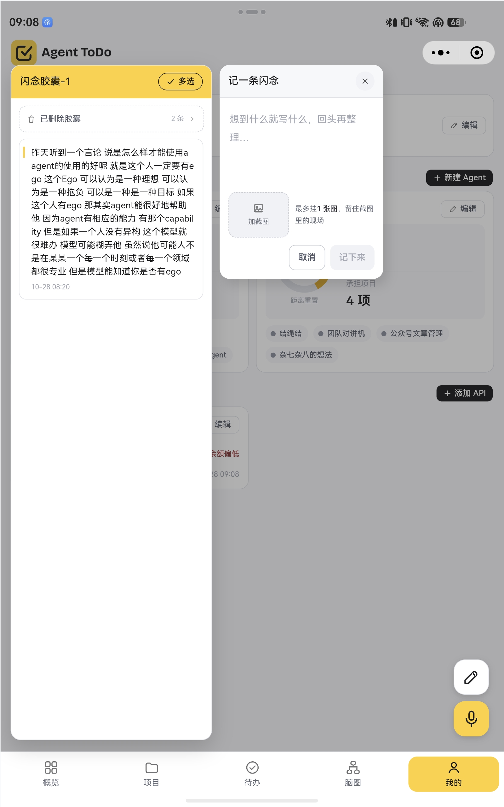
- 位置与宽度
- 260 宽的副抽屉，贴开在胶囊抽屉右侧，顶部对齐。与手机「从下升起」是同一块模板的两种站位。
- 入口
- 抽屉外右下角那颗铅笔「写」，就在录音块正上方。
- 无「改成说」
- 手机端那颗键这儿不出现——“说”那颗悬浮块就在面板外面，不必在同一块面板里再放一颗同义的键。
- 挂图区
- 与手机同一条：最多 1 张；缩略图右下「更换」、右上 ✕。
- 点别处
- 面板外的整屏是透明挡板：点一下先关面板（同样有那道“再点一次丢弃”），不会误触后面的键。
转脑图有两条路：原样挂，还是让模型重排
同样是“把胶囊送到脑图”，其实是两件事：挂到已有的树上（同步、免费、一条胶囊一个节点）， 和新建一张让模型重组（异步、计费、可能失败）。两条路都在同一个「选择脑图」抽屉里，靠选哪张卡区分。
- 选中几条 → 点「转脑图」：弹出「选择脑图」，最上面那张卡是「语义转脑图」，下面是已有脑图。
- 选一张已有的图：这条是同步的——每条胶囊变成一个节点挂到那张图下，切过去就能看见。
- 选「语义转脑图」：这条是异步的——胶囊交给模型按语义重组，几秒到几十秒出结果。
- 确定之后胶囊离开列表，但不进「已删除胶囊」：它不是被删，是被搬走。名单独占一档，只收手动删除的那些。
- 图不会凭空出现：脑图列表最前面立刻多一张卡，名字先叫「语义转脑中」，节点数还是 0；生成完自动改名、补上节点与层数。
- 同一时间只受理一张：上一张还在生成时再发，会被挡下并提示稍等——并行两份会让“哪条胶囊去哪张图”变得难说清。
- 失败也不丢东西：卡上写「语义转脑图失败」，可以重试；被带走的胶囊自动回到胶囊列表，不用重新口述。
- 生成完的那张图还不能直接派活：归属项目与格式都是空的，打开时会先让你补（图 5-7）。
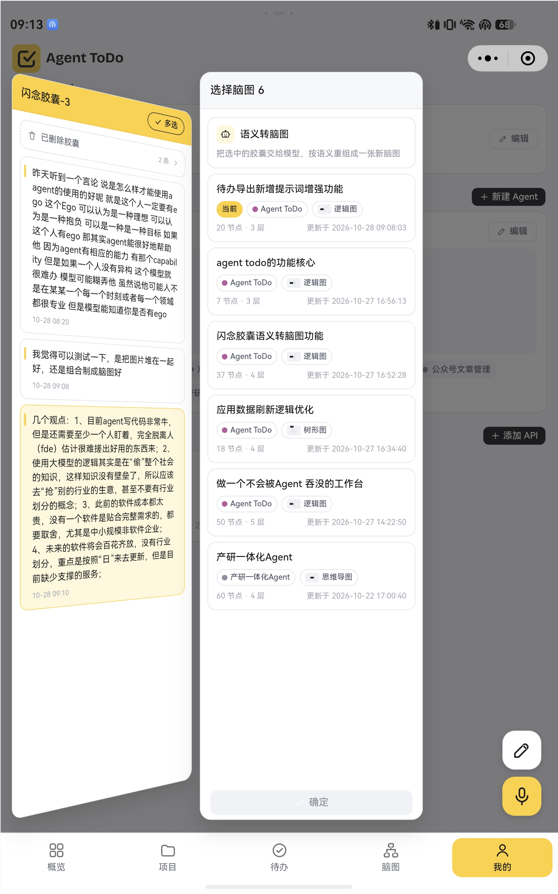
- 标题数字
- 「选择脑图 6」＝你已有几张脑图，不数最上面那张卡。与「脑图-N」同一条口径。
- 语义转脑图
- lead 卡，副标题「把选中的胶囊交给模型，按语义重组成一张新脑图」。一张脑图都没有时它也照样在——新用户第一次用，正是最该用起来的时刻。
- 已有脑图
- 一路同款：项目标签、格式（逻辑图 / 树形图 / 思维导图）、节点数·层数、更新时间。
- 当前
- 黄色小标，指右侧画布正在编辑的那张。
- 被锁的卡
- 生成中 / 生成失败 / 待完善这三种照旧画出来但选不了（压暗），点了给一句“为什么”：「这张脑图还在生成中，稍后再选」「生成失败，重试生成后再选」「还没完善（归属项目 / 格式），完善后再选」。不把它们藏起来——直接消失会被读成“我刚建的那张没了”。
- 确定
- 底部通栏。没选任何一张时置灰；按下去那一刻还会复检一次靶子是否刚变成不可选。
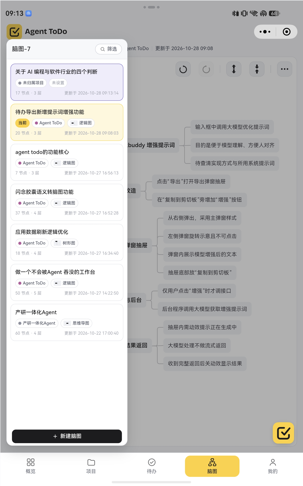
- 卡名
- 取自这批胶囊在讲什么，不合适就进去改（与图 5-8 是同一个面板，只是标题不同）。
- 未归属项目
- 模型不知道该归你哪个项目——这一步留给人。点开这张卡时先补这一项。
- 未设置
- 同上。选了格式，画布才知道按哪种形状铺。
- 17 节点·3 层
- 生成出来就有——结构是模型给的，不是你拖的。
- 停在列表里
- 没有“当前”标：你没有被带到任何一张图上，卡就在列表最前面等着完善。
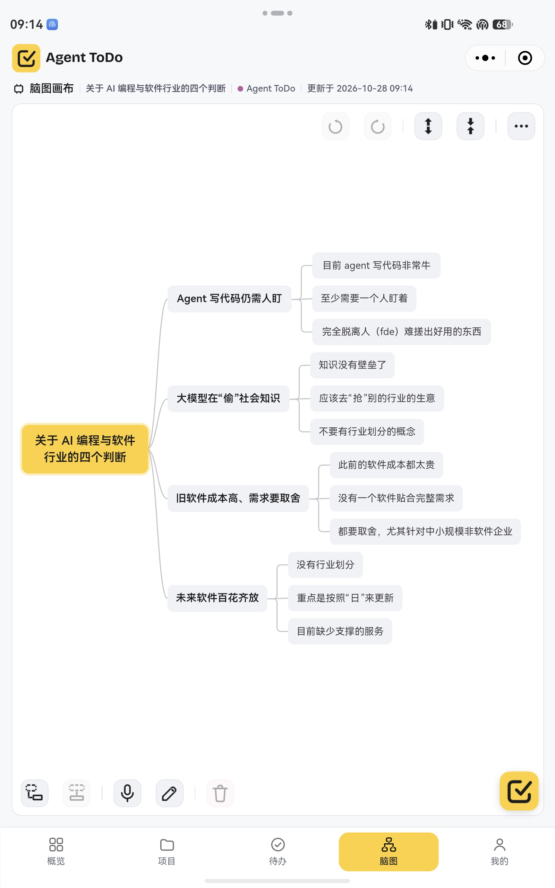
- 根节点
- 一句话概括这批胶囊在讲什么，黄底墨字。
- 分支
- 按语义归并，不是按口述先后。同一件事被拆到前后两段的，会被合到一处。
- 节点
- 一条长口述常被拆成几段，各挂到该在的位置；原始胶囊尽量作为独立节点保留，图名与根节点由模型概括，生成后需要核对。
- 面包屑
- 图名 ＋ 项目标签 ＋ 更新时间。项目这一栏是补完之后才有的。
- 接下来
- 它就是一张普通脑图了：拖节点改结构、说一句话改文字、挂到待办上随导出走。
项目
项目不是文件夹，是一个自建的容器：它有自己的阶段、颜色、所属 agent，往里装待办和脑图。 一条待办只能属于一个项目（单级归属），所以“放进哪个项目”是唯一一次真正的分类决策。 项目数量不设上限，但颜色只有 8 个槽位——第 9 个项目开始就要跟别人共用颜色。
操作流程：找到并打开一个项目
- 进「项目」：平板点底部第二个 tab，PC 点左栏第二个图标。列表从左侧浮出，右侧保留上次打开的项目。
- 列表太长就筛：点标题带右侧「筛选」，按状态 / 节点 / 关联 agent 三层收窄。
- 点任意一张项目卡：右侧立刻换成该项目详情，抽屉不关——这样可以一张张点着比较。
- 点抽屉外的遮罩收起列表，把整个屏幕让给详情页。
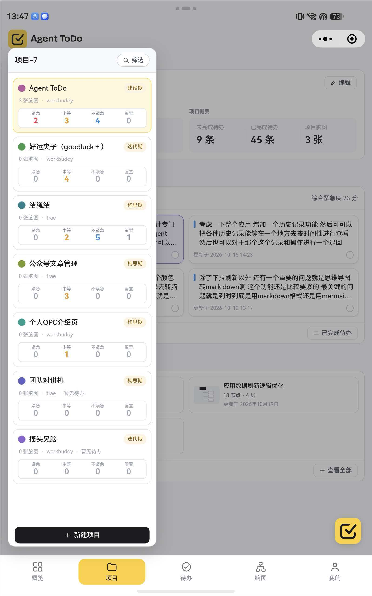
- 项目-7
- 标题带左侧的计数＝当前筛选条件下的项目总数。
- 筛选
- 放大镜图标＋文字，打开三层筛选面板（图 3-2）。
- 色点
- 项目色，8 个槽位之一。颜色只用于识别，不表示优先级。
- 阶段标签
- 构思期 / 建设期 / 迭代期 / 暂停期，四选一，新建时定。
- 脑图 · Agent
- 「3 张脑图 · workbuddy」：这个项目下有几张脑图、绑的是哪个 Agent。没待办时显示「暂无待办」。
- 四档条
- 紧急 / 中等 / 不紧急 / 留置的条数，红橙蓝灰四色。这是项目卡上最该扫的一行。
- 选中态
- 黄底＋黄描边＝当前正在右侧显示的项目。
- 排序
- 默认按综合紧急度从高到低排；已归档的项目沉到列表末尾，不参与这个排序。
- ＋ 新建项目
- 抽屉底部黑色实心长条，固定在列表末尾，不随滚动跑掉。
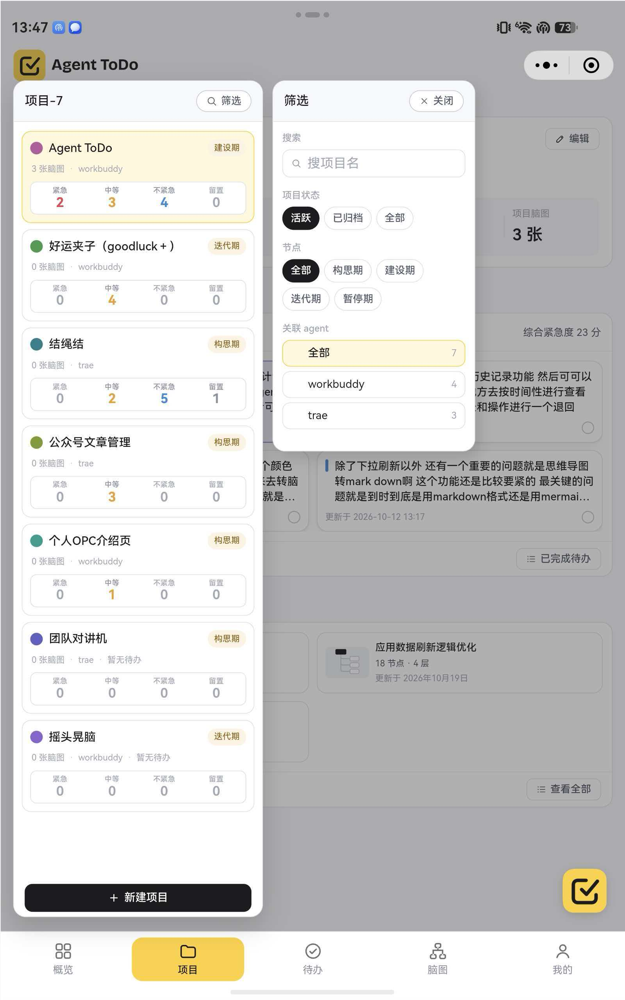
- 搜索项目名
- 按名称模糊匹配，输入即过滤。
- 项目状态
- 活跃 / 已归档 / 全部。当前选中项是黑底白字——这是全应用“选中”的第二种写法（另一种是黄底）。
- 节点
- 全部 / 构思期 / 建设期 / 迭代期 / 暂停期。四个阶段在这里当筛选用。
- 关联 agent
- 全部（7）/ workbuddy（4）/ trae。括号里的数字是命中条数，等于告诉你“这个 Agent 手上有几个项目”。
- × 关闭
- 收起面板，已生效的筛选保留；要清空就逐层点回「全部」。
操作流程：新建一个项目
- 点抽屉底部「＋ 新建项目」，弹出面板（图 3-3）。
- 填项目名称——唯一必填项。空着时底部「创建项目」是灰的，点不动。
- 选项目节点（四选一，默认构思期）。这是项目自己的生命周期，不是待办的紧急度。
- 可选：关联 agent。选了之后，这个项目会出现在该 Agent 卡的“承担项目”里。
- 可选：选一个项目色。已被人占用的槽位会写「已被「…」占用」，选不了。
- 可选：写备注（“这个项目是干什么的”），将来回头看全靠它。
- 点「✓ 创建项目」，新项目出现在列表末尾，并自动被选中。
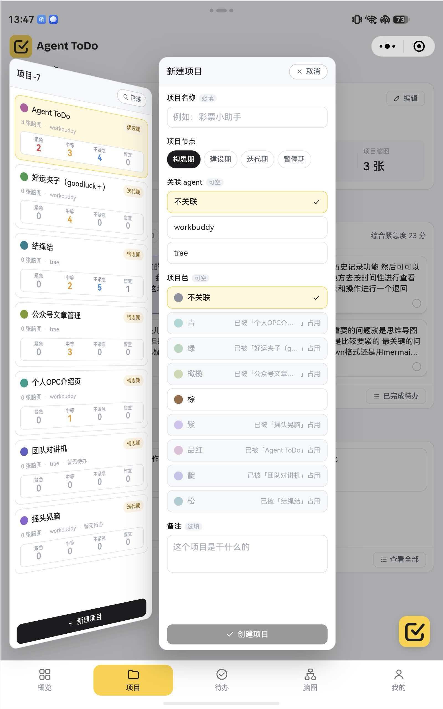
- 项目名称
- 必填。占位提示「例如：彩票小助手」。建议写成名词短语，不要写成一句话。
- 项目节点
- 四选一：构思期 / 建设期 / 迭代期 / 暂停期。默认选中“构思期”（黑底），可按需修改。
- 关联 agent
- 可空。下拉三选一：不关联 / workbuddy / trae。选“不关联”就是纯人肉项目。
- 项目色
- 可空。8 个色槽：青 / 绿 / 橄榄 / 棕 / 紫 / 品红 / 靛 / 松；灰字标出已被谁占用。
- 备注
- 选填。一句话说明这个项目干什么，会显示在详情页简介的位置。
- 创建项目
- 底部实心长条。名称为空时置灰不可点；填好后变黑可点。
- × 取消
- 右上角，直接丢弃本次填写，不二次确认。
操作流程：在项目详情里干活
- 看「基础信息」：确认阶段、Agent、重置倒计时，以及三个概要数（未完成 / 已完成 / 脑图数）。
- 切「项目待办」的四档药丸：点“紧急 / 中等 / 不紧急 / 留置”切换分组，默认停在“不紧急”。
- 在待办卡上直接勾完成：点卡片右侧的空心圆，卡片变成已完成；底部「已完成待办」可以回看。
- 点待办卡进待办详情（见 04 待办）。
- 滚到「项目脑图」：看这个项目下所有图，点卡片进图；「查看全部」跳到脑图模块。
- 要改项目本身：点右上「✎ 编辑」，改名称、阶段、色、备注。
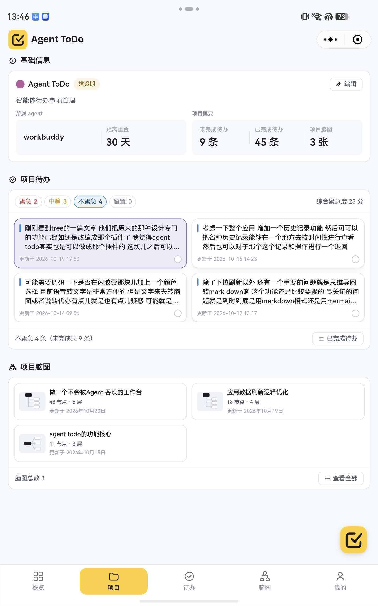
- 基础信息卡
- 色点＋项目名＋阶段标签；下面一行是备注，右侧「编辑」改项目属性。
- 所属 agent
- 显示绑定的 Agent 名（图里是 workbuddy）。
- 距离重置
- 「30 天」：离这个 Agent 的套餐周期重置还有多久，是个倒计时，不能点。
- 项目概要
- 未完成待办 9 条 / 已完成待办 45 条 / 项目脑图 3 张。三个数都是累计量。
- 四档药丸
- 紧急 2 / 中等 3 / 不紧急 4 / 留置 0。当前选中的是“不紧急”（黑描边），下方只列这一档。
- 综合紧急度
- 右侧「综合紧急度 23 分」：把四档按权重折算出的总分，用来跨项目比较“哪个更该先做”。
- 待办卡
- 左色条＝紧急度；正文两行截断；下挂项目标签、脑图标签；右下空心圆可勾完成。
- 底部计数
- 「不紧急 4 条（未完成共 9 条）」——当前档条数，同时提示全项目还差多少。
- 已完成待办
- 右侧按钮，切到已完成列表，可以回看或取消完成。
- 项目脑图
- 每张图一张卡：名称、节点数 · 层数、更新时间；底部「脑图总数 3」＋「查看全部」。

- 左栏高亮
- 「项目」图标变黄底，当前所处模块一眼可辨。
- 基础信息横排
- 所属 agent、距离重置、三个概要数并排一行，比平板更紧凑。
- 四列待办卡
- 卡宽变窄，正文截断更早；点开卡片才是完整正文。
- 标签叠加
- 卡上可同时出现项目标签和脑图标签（如“应用数据刷新逻辑优化 ＋ 1 张图”），提示这条挂了上下文。
待办
待办是全应用的中转站：上游接胶囊，下游挂脑图，最后一步导出也在这里。一条待办只有两个必选属性—— 一个项目（单级归属，不能既属于 A 又属于 B）和一档紧急程度（紧急 / 中等 / 不紧急 / 留置）。 至于“这条活具体怎么做”，不写进待办，写进它挂的那张脑图。
四档紧急程度
操作流程：记一条待办
- 进「待办」：平板点底部第三个 tab，PC 点左栏第三个图标。左侧浮出待办抽屉，标题带写着总条数。
- 点底部「＋ 创建待办」，打开「记一条待办」面板（图 4-1）。
- 写待办内容：一句话说清“要做什么”，不要写“怎么做”。
- 点一档紧急程度：四选一，必选，默认停在“中等”。
- 选归属项目：一行一个项目，带色点；必选，且只能选一个。没给过颜色的项目收在下面「选择其他项目」里（图 4-1 注）。
- 点「✓ 保存待办」，新待办落到列表中对应紧急度的位置。图片、胶囊、脑图都不在这里加，建完进详情页补（见下文）。
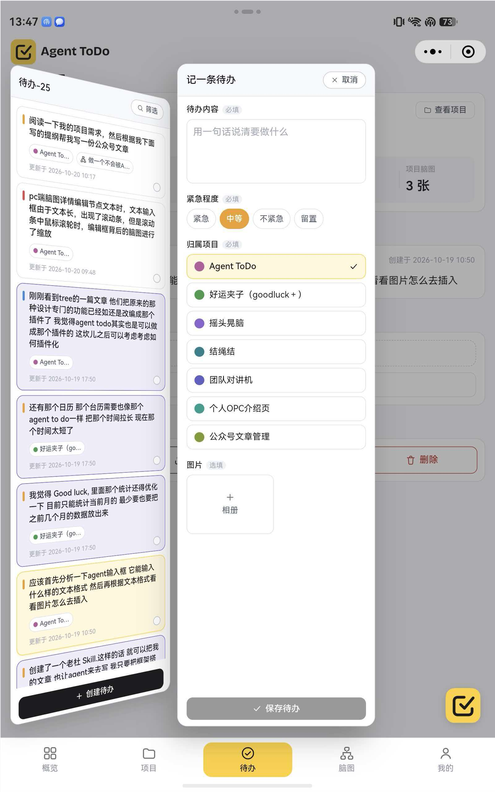
- 待办内容
- 必填，多行输入。占位提示「用一句话说清要做什么」——写“要什么”，不写“怎么做”。
- 紧急程度
- 必填，四个药丸：紧急 / 中等 / 不紧急 / 留置。选中项是橙色实底（不是黄底）。
- 归属项目
- 必选。主列表只列已经有颜色的项目（色点是这一列唯一的身份标记）；选中项黄底＋右侧勾。多于 8 个就往下滚。
- 选择其他项目
- 主列表尾部第一行。点开在右侧弹一层副窗，里面只列没配颜色的项目；选中后这一行就换成项目名＋同款黄底，点回去即还原成文案。
- 新建项目
- 尾部第二行，只在编辑已有待办时出现——新建时手上正开着一张没写完的表单，不在这里再叠一层。项目有自己的一级入口。
- 保存待办
- 底部实心长条。内容为空时灰掉；填好后变黑。
- × 取消
- 右上角，丢弃本次填写。
操作流程：在列表里找活、勾活
- 看列表：待办按更新时间倒序排（最近的在最上面），与胶囊的正序相反（图 4-2）。
- 看左色条：红橙蓝灰四色，一眼分出哪条急。
- 点卡片右侧的空心圆标记完成，不必进详情。
- 点卡片其他位置进待办详情。
- 点「筛选」收窄列表（按紧急度、项目、完成状态）。

- 待办-25
- 标题带计数＝当前列表条数（受筛选影响）。
- 左色条
- 卡片最左侧那道 3px 竖条＝紧急度。它比一个文字标签更快被扫到。
- 正文
- 最多显示三到四行，超出截断。列表里只判断“哪条”，不读细节。
- 项目标签
- 色点＋项目名（超长省略）。说明这条归在哪儿。
- 脑图标签
- 图钉＋脑图名，表示这条已经挂了上下文；没有就不出现。
- 更新时间
- 「更新于 2026-10-20 10:17」，列表的排序依据。
- 空心圆
- 右侧圆形勾选框，点一下即完成，卡片转灰、滑出当前列表。
- ＋ 创建待办
- 抽屉底部黑色长条，固定不随滚动。
待办详情：六个区块，动作排在第二
详情页自上而下的顺序是刻意的：所属项目（它归哪儿）→ 操作（对这条待办做什么）→ 待办信息（要做什么、多急）→ 闪念胶囊（当初是怎么说出来的）→ 图片（证据）→ 关联脑图（怎么做）。 动作提到内容之前，是因为“勾掉 / 发出去 / 改一改”比读完全页更常见。 三块附件都常显：没有也占一块位置，写清下一步去哪儿补，而不是整块消失。
胶囊、图片、脑图各有自己的入口，互不牵扯：胶囊是多选后「保存」，图片是逐张上传、逐张撤， 脑图是「关联 / 替换 / 取消关联」。编辑弹窗只管三件事——正文、紧急度、归属项目； 附件的增删一律不进表单，也就不会出现“改个错字把图弄丢了”。
同一条待办，状态不同，这条上的键也不同——不是同一颗键换标签，而是三套： 未完成＝完成 / 导出 / 编辑 / 删除；已完成＝还原 / 导出 / 删除； 已删除＝只剩还原。所以“还原”永远只有一处意思：回到未完成。

- 所属项目
- 整张项目卡：色点＋名称＋阶段标签，下面是备注与两组概要数（左「所属 agent ＋ 距离重置」、右「未完成 / 已完成 / 项目脑图」）。右侧「查看项目」跳项目详情。
- 操作条
- 四段通栏等分：完成（黄底实心，第一段）｜导出｜编辑｜删除（红字）。它排在「待办信息」上面——先给动作，再给内容。
- 待办信息
- 左上档名（图中“不紧急”，前面那道竖条是紧急度色），右上灰色「创建于 …」；下面是完整正文，不截断。
- 闪念胶囊
- 排在待办信息下面、图片上面。区块标题的图标是闪电；空态是「这条待办还没有关联闪念胶囊」＋整宽「＋ 选择胶囊」。
- 图片
- 虚线一句「这条待办还没有添加图片」＋整宽「＋ 从相册选择」。在详情页就能加图，不用回编辑表单。
- 关联脑图
- 同款空态：「这条待办还没有关联脑图」＋整宽「＋ 关联脑图」。挂载粒度是整张图，不拆节点。

- 闪念胶囊 1
- 标题后面的数字＝挂了几条。每张卡右上角一颗 ✕，摘掉这一条它就回到胶囊列表（不算新增，也不进概览统计）。
- ＋ 选择胶囊
- 虚框格，与胶囊卡同排。点它再挂几条——可多选，弹出列表右下角是「取消 / 保存」。
- 图片（仍空）
- 图是“拍给别人看的证据”。这一条还没配图，所以仍是那句「这条待办还没有添加图片」＋「＋ 从相册选择」。
- 脑图缩略图
- 整张图缩着摆，只读：不能移、不能编、不能缩。点它才进脑图详情。旁边那枚黄色圆标是常驻的悬浮入口，不是这块的按钮。
- 名称与元信息
- 缩略图下方是图名，一行灰字跟着「20 节点 · 3 层 · 2026-10-27」——规模与最近改动时间。
- 取消关联 / 替换
- 右端两颗：取消关联只摘挂载，图本身还在脑图列表里；替换换挂另一张（只能挂一张，换就是把旧的摘掉）。
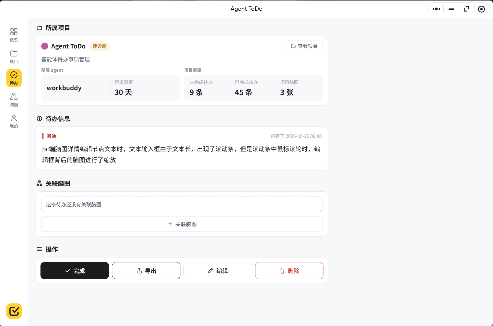
注：这张 PC 图摄于本次改版之前（通栏操作条、常显的附件区块、10-23 新增的「闪念胶囊」都还没上）。PC 与平板共用同一套详情组件，版式与操作条请以图 4-3、图 4-4 为准。
- 紧急度
- 正文左上角红色“紧急”小标签，与左侧色条同色系。
- 所属项目卡
- 横向铺满，四个概要数并排：所属 agent / 距离重置 / 未完成 / 已完成 / 脑图。
- 操作行
- 四颗键并排横放：完成在最左、分量最重；导出 / 编辑走安静样式；删除单独用红字，一眼认出、手也不会顺过去。
在详情页加胶囊、加图、换脑图
- 关联胶囊：空态点「＋ 选择胶囊」，弹出胶囊列表——可多选，右下角「取消 / 保存」。挑中的那几条当场以卡片形式长进详情页，一行排三张，只读，点一下看全文。
- 胶囊去哪了：被关联的胶囊会从闪念胶囊列表里消失（与转待办、转脑图同一个口径：内容挂一处，不重复出现在两处）。
- 取消关联：卡片右上角 ✕ 摘掉这一条，它就会回到胶囊列表——回到列表不算新增，也不进概览统计；创建时间按“回来的那一刻”重算。
- 加图：空态点「＋ 从相册选择」；已经有图就点末尾那一格「＋ 添加图片」。选完即时上传生效，没有“保存”这一步。
- 撤图：点图右上角那颗 ✕，只撤这一张。
- 看图：点任意一格全屏预览；格内左下角「1 / 1」是第几张。
- 挂 / 换脑图：点「＋ 关联脑图」选一张；已经挂过时这颗键换成了「替换 / 取消关联」——只能挂一张，换就是把旧的摘掉。
- 改脑图内容：点缩略图进脑图详情去改。详情页里这张是只读的，不能拖、不能编、不能缩。
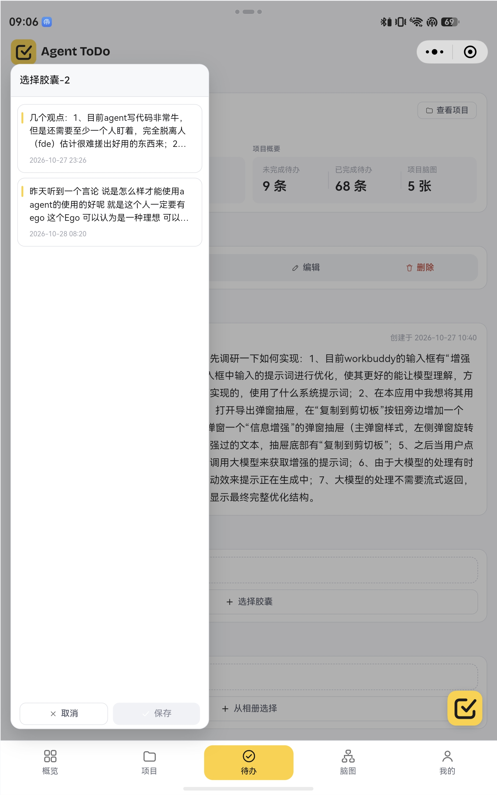
- 候选
- 只列还在胶囊列表里的那些——已经被别的待办关联、或已经转成待办 / 脑图的不会出现在这里。
- 多选
- 点一条打一个勾，勾几条挂几条；挂上后一行排三张，只读，点一下看全文。
- 取消 / 保存
- 底部两颗并排。取消＝这一次什么都不改。
- 摘掉
- 挂上之后每张卡右上角有一颗 ✕，摘掉的那一刻它就回到胶囊列表。
关键一步：导出给 Agent
导出的不是“排好版的文档”，而是一段可以直接塞进 Agent 输入框的 Markdown： 待办原文 → 图片（一张一行）→ 关联脑图的标题层级 → 关联的闪念胶囊（一段列表）。 正文一个字不改，层级完全照抄脑图，胶囊也原样搬过去。 预览区里看到什么，复制出去就是什么——两边用的是同一个函数。
- 在待办详情点「导出」，弹出「待办导出」抽屉（图 4-7）。标题换过一次：原来叫“适配 agent 文本”，读起来像一句说明，不像一颗入口的名字——而它下面现在挂着两颗键。
- 核对预览：最上面是待办原文；有图片时后面跟着
，一张一行；再往后是关联脑图的#层级；最后是胶囊那一段。 - 认一下胶囊段长什么样：一条
---分隔线，下面一行裸文本「闪念胶囊」，再下面是无序列表，一条胶囊一行。 - 只发文字就勾「不含图片」：开关在预览框正下方（预览很长时要往下滚才看得到）。勾上后图片行整段消失，预览立刻变短；点「增强」时也会照这个开关走——你送去润色的就是你看到的那一份。
- 点底部「复制到剪贴板」：成功时按钮自己变成「已复制」，抽屉不关，方便再核一遍。切一下「不含图片」，「已复制」就跟着收回 —— 因为内容已经不是你刚复制的那一份了。
- 粘进 Agent 的输入框，直接发。格式是 Markdown，模型认、人也认。
- 觉得这段话“人味太重、模型不好懂”就点右侧「增强」：让大模型把它改写成一份任务书（见下一节）。
# 标题
脑图的层级是 # 根 → ## 一级子 → ### 二级往下。胶囊如果也写成
## 闪念胶囊，那它在“既挂了脑图、又关联了胶囊”的待办里，会被读成脑图的一个子节点 ——
给 Agent 看的文本，标题层级就是结构信号。所以改成「分隔线 ＋ 裸文本标签」：既说清“以下换了个来源”，
又不占任何层级。有没有脑图都长一样，同一条待办两次导出的格式始终一致。胶囊只带正文、不带时间，
与正文那一段同一口径；空文本的胶囊不产出空条目。
 这种 Markdown 图片语法：目标平台是否直接显示图片，取决于它的 Markdown 渲染、图片抓取与链接访问规则；
在纯文本工具里则保留为链接文本。链接使用完整域名（不是库里的相对路径），
所以分享链接前要先确认接收方能访问，并检查图片内容；一旦粘到外部平台，也要同时考虑该平台的存储与传播规则。

- 标题
- 「待办导出」——说的是“这是个什么操作”，而不是“这段文本给谁用”。
- 正文段
- 最上面先是待办原文，不润色、不改写。
- 图片行
- 有图才出现，紧跟在正文后面： 一张一行。这条没图，所以图上看不到。
- 标题层级
- # 脑图根节点、## / ### 逐层往下——照抄脑图，不重排、不加序号。
- 胶囊段
- 整段的最末尾：一条 --- ＋ 一行裸文本「闪念胶囊」＋ 无序列表。只带正文、不带时间。
- 不含图片
- 预览框正下方的勾选项。勾上即剔除全部图片行，只留文字。
- 复制到剪贴板
- 底部黑色长条。复制成功后变成「✓ 已复制」，抽屉不关，方便再核对一遍。
- 增强
- 黄色那颗，在复制键右侧。点它另开一层「信息增强」抽屉，让模型把这份文本改写成任务书（图 4-8、图 4-9）。
- × 取消
- 右上角关闭，不复制任何东西；只读预览，改不了待办本身。
可选一步：「增强」，让模型把话改成任务书
待办正文经常是“人说的话”：口语、跳序、想到哪儿写到哪儿。模型读得懂，但容易漏条件。 「增强」把这段原文交给大模型，换回一份分好段、带标题、把验收口径写在明面上的任务书 —— 目标是重组原文、减少无关增补；模型输出仍可能偏离原意，复制前必须人工核对。
- 点「增强」：右侧再弹一层「信息增强」抽屉，左边那份导出文本留着、变成侧转示意（不可点）。
- 等它转圈：抽屉里先出现一句「正在增强提示词…」和一行小字「模型正在整理这条待办，通常 5–20 秒」。这是一次真的模型调用，不是本地拼字符串，所以它会有等待。
- 结果出来是只读的：增强后的文本直接铺在抽屉里，段落、
##小标题、编号清单都排好了。要改就复制出去改——这一层不是编辑器。 - 点底部「复制到剪贴板」带走增强后的那一份（不是原文）。切回左边，原文一个字都没被改过。
- 等不及 / 想要原来那份：点「× 取消」或点左边抽屉，这一层就收起；原文照旧，随时可以再点一次「增强」。
- 失败了会明说：「增强失败了，请稍后重试」＋一颗重试键，不吞错、也不给英文错误码。重试沿用第一次的「含不含图片」——不会因为重试偷偷把图带上。
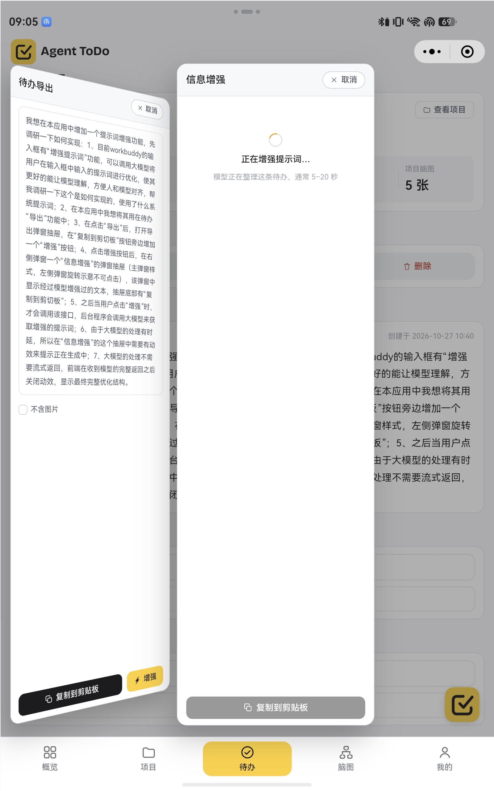
- 「正在增强提示词…」
- 主提示，居中。说的是正在发生什么，不是“加载中”。
- 「通常 5–20 秒」
- 给一个预期，人才愿意等。超过这个区间仍然没回来，它会自己超时报错。
- 左侧被侧转
- 导出抽屉转了个角度、压暗、不可点——层级关系一眼可辨：这一层是从那一层点出来的。
- 底部键压灰
- 还没有结果时「复制到剪贴板」是灰的，避免复制到空字符串。
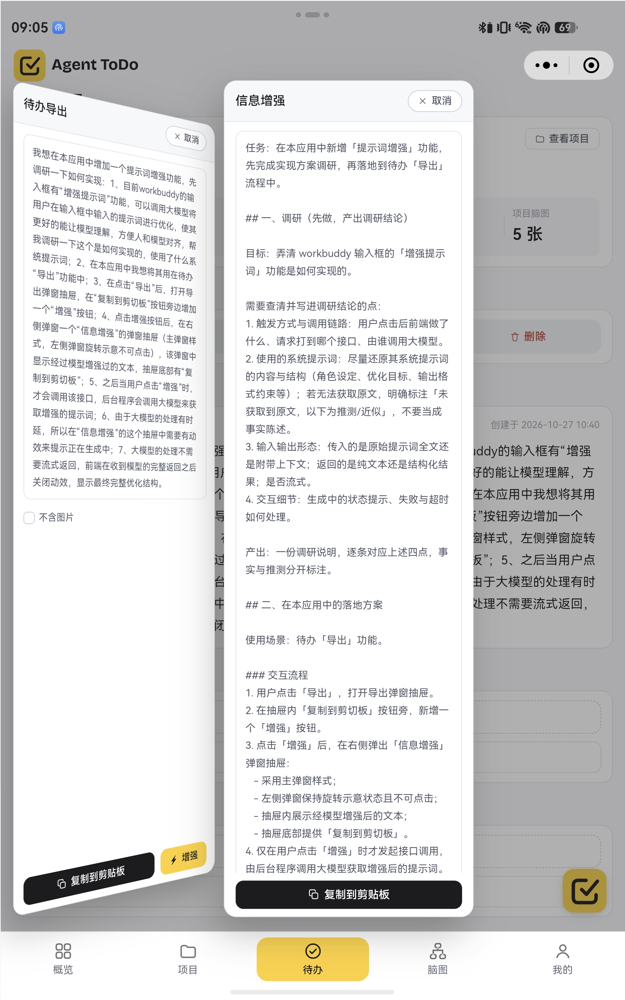
- 任务
- 最上面一句话说清要干什么——这句话是从原文里抽出来的，不是新编的。
- 小标题与编号
- ## 分大块、### 分小节，条目用 1. 2. 3. 排开。Agent 读这种结构比读一大段白话稳。
- 只读
- 不能就地改。它是“带走的另一份写法”，不是待办的第二个正文。
- 复制到剪贴板
- 底部通栏，带走的是这一份增强结果。原文仍在待办里，没被替换。
- 不入库
- 增强结果永远不写进待办：关掉抽屉就没了，想留就复制走。
脑图
脑图是这套产品里唯一“能改结构”的地方。一条待办挂的是一整张图，而这张图里谁是主干、谁是分支， 全靠拖：往上拖变子节点，拖出来变主干。这件事写在文本里要写成“把第 3 条改成第 1 条的父级”， 没人写得出来；在图上就是按住、拖动、松手。
操作流程：建一张图
- 进「脑图」：平板点底部第四个 tab，PC 点左栏第四个图标。左侧浮出脑图抽屉（图 5-1）。
- 点底部「＋ 新建脑图」，打开面板（图 5-2）。
- 起名：占位提示「例如：票据录入链路」——名字要能说明“这张图想清楚什么事”。
- 选所属项目：必选，一张图只属于一个项目。
- 选格式：六种画法，先用默认的“思维导图”，建完也能看别的形态。
- 点「✓ 创建脑图」，直接进画布，根节点是空的，可以开始加。
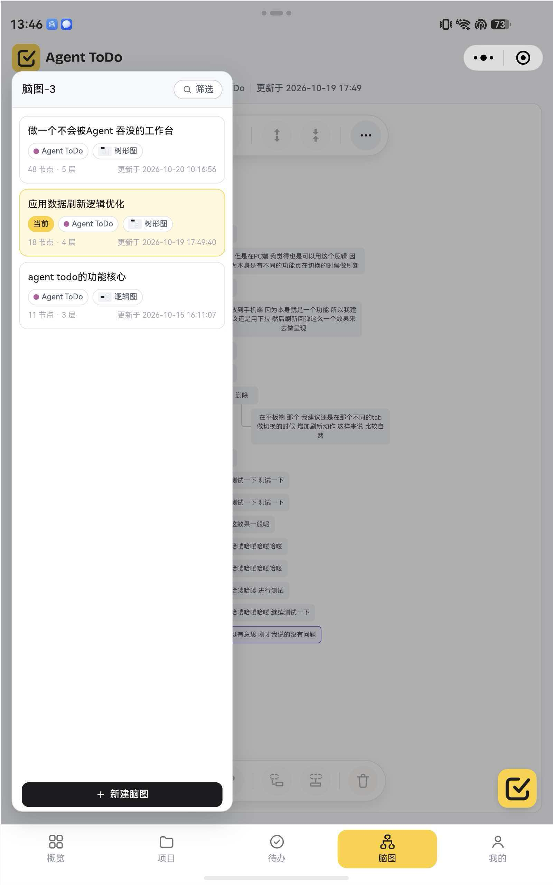
- 脑图-3
- 标题带计数＝当前筛选下的脑图总数。
- 当前
- 黄色小标。表示这张就是右侧画布正在编辑的那张——切换卡片时靠它确认“我在改哪张”。
- 项目标签
- 色点＋项目名，说明这张图归在哪个项目下。
- 类型标签
- 树形图 / 逻辑图 / 思维导图…，是建图时选的格式。
- 48 节点 · 5 层
- 规模指标。层数越深，导出成 Markdown 时越容易碰到第七层的退化。
- 选中态
- 黄底＋黄描边，与项目、待办抽屉的选中态同一套写法。
- ＋ 新建脑图
- 底部黑色长条，固定末尾。

- 脑图名称
- 必填。占位提示「例如：票据录入链路」；写清“这张图要画什么”，后面才认得出。
- 所属项目
- 必填。一行一个项目：色点＋名称，同一行右侧那枚浅灰小标签是该项目的 agent（agent 由项目决定，这里不单独选）。选中项黄底＋右侧勾。
- 选择其他项目
- 列表末尾那一行，只列还没配颜色的项目。这一步没有「＋ 新建项目」——建项目在自己的入口里做，不在填空的中途再开一层。
- 格式
- 可空。思维导图 / 逻辑图 / 组织结构图 / 树形图 / 时间轴 / 鱼骨图，每项左侧有缩略图预览形状。空着也能建，之后在「编辑脑图信息」里补。
- × 取消
- 右上角。已填的内容不保存，直接退回列表。
- 创建脑图
- 底部实心长条，名称为空时置灰——截图正是这个状态。
| 格式 | 形状 | 什么时候选它 |
|---|---|---|
| 思维导图 | 中心向左右两侧发散 | 默认。想一件事的全貌，不强调先后 |
| 逻辑图 | 单侧向右展开 | 推理、拆解，“因为→所以”的链条 |
| 组织结构图 | 自上而下分层 | 交代归属与汇报关系，谁是主干一眼看出 |
| 树形图 | 根在左、枝向右 | 最常见的工作树，也最适合导出成标题层级 |
| 时间轴 | 一条主线带节点 | 有先后顺序的过程、版本演进 |
| 鱼骨图 | 主干带斜刺 | 找原因：把多个成因挂到一条主问题上 |
操作流程：在画布上摆结构
画布上有三块控件，各管一段、互不重叠：右上角管这张图（撤回 / 重做 ‖ 展开 / 收起 ‖ 编辑）， 左下角管当前选中的那个节点，左上角那枚百分比胶囊只管画布比例。两个角对角呼应， 拇指不用横跨整块画布。
- 拖动空白处平移画布，双指缩放（PC 用滚轮）。三块控件浮在画布上，不随画布移动；四周留白统一 12，贴着画布边。
- 点一个节点选中它，左下那条浮条亮起，五颗键都作用于“当前选中”。
- 按住节点往下拖、松手＝变成对方的子节点；拖到空白处＝提升为一级节点。这是全应用最关键的一个手势，松手即存——切走再回来、换端打开，结构都在。
- 加节点：左下浮条最左那组两颗＝加子节点 / 加同级节点（选中根节点时“加同级”是灰的，根没有同级）。
- 改文字：中间那组＝语音 / 编辑，一个说一个打（图 5-5、图 5-6），两条路都不离开这张画布。
- 删节点：最右那颗垃圾桶。删父节点会连子树一起走，动手前先确认。
- 收起某一支：右上那组的展开 / 收起两颗，折的是当前节点这一支（没选中时置灰）。
- 撤回 / 重做：右上最左两颗环形箭头，改的是整棵树的历史，可以连点。
- 点右上最右那颗「···」：弹出脑图信息抽屉，名称 / 所属项目 / 格式三项一次改完，删除这张图也在抽屉底部。
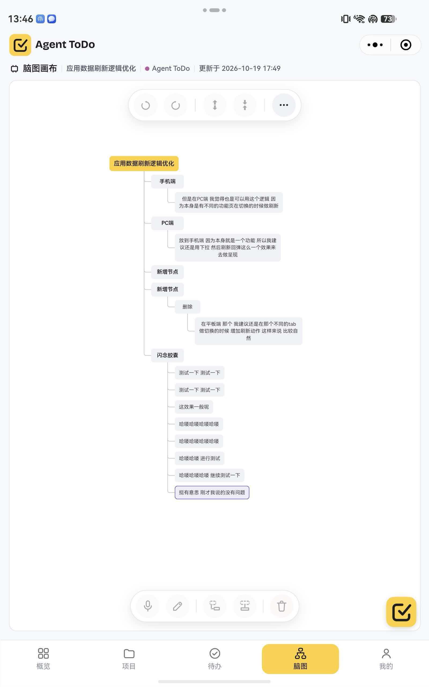
- 面包屑
- 「脑图画布」＋图名＋项目标签＋更新时间。位置最上，用来确认“我在哪张图里”。
- 右上工具条
- 五颗键、竖线分三组：撤回｜重做 ‖ 展开｜收起 ‖ 编辑（那颗「···」，弹脑图信息抽屉）。整条贴右上角，离画布边 12。
- 缩放胶囊
- 左上那枚「100%」。只在缩放时浮现、停下自己淡出，点一下＝回到适应屏幕。它与右上那条同高（40）、顶边同一条线。
- 根节点
- 黄底墨字胶囊。全图只有一个，也是最显眼的一块。
- 分支节点
- 白/浅灰底、细描边，字号比根节点小一档。层级越深，颜色越淡。一级每行最多 20 字、二级及以下 40 字——语音转出来的长句不再被切成一堆碎行。
- 备注
- 挂在节点右侧的浅灰文字块，是这个节点的展开说明；导出时会成为标题下的正文段落。
- 连线
- 直角折线，从父节点右侧出、子节点左侧进。走向就是父子关系。
- 左下节点条
- 五颗键、三组：加子节点｜加同级节点 ‖ 语音｜编辑 ‖ 删除，作用于当前选中节点。10-23 起顺序换成这样（原来语音/编辑在最左）。

- 左栏高亮
- 「脑图」图标黄底，当前位置一眼可辨。
- 画布范围
- 浅灰凹底＋圆角白卡，四周留白，滚轮缩放时不会把工具栏挤出视野。
- 右上工具条
- 与平板同一套五颗键（撤回 / 重做 ‖ 展开 / 收起 ‖ 编辑），鼠标直接点，不需要先长按。
- 左下节点条
- 同样在左下角、同样五颗，只在选中节点时可用；编辑框溢出时，框内滚轮就能滚，画布不跟着缩。
操作流程：改一个节点的文字（键盘 / 语音两条路）
入口都在左下那条浮条的中间一组：编辑走键盘，语音走语音。语音这条是本产品与传统思维导图最大的差别 —— 说话时输入法根本不弹，画布也就不会被键盘吃掉半屏，你能一边盯着整棵树一边把这句话说完整。
- 先点节点选中它。没选中时五颗键是灰的，浮条本来就是为了“改谁”才出现。
- 键盘这条路：点编辑。浮条就地长高——中间长出输入区，下面多出「取消 / 保存」（图 5-5）。高度随文字折行自己算，面板底沿不动、顶边往上让。编辑态不再显示那排键，省下的高度全给了正文，能一次多读几行。面板里还有一条挂图区：一个节点最多挂 1 张截图，图就画在这个节点旁边。
- 文字还是超出就滚：输入区到上限就停住，框里出现一条细滚动条——触屏单指上下滑，PC 用鼠标滚轮，滚的是框里的字，画布一动不动。
- 语音这条路：点语音。节点原地盖上一层半透明遮罩，中间浮出秒数开始倒数 60（图 5-6）；说完再点一次结束，或等它自己数到 0。
- 等它回来：遮罩上的字变成「语音识别中」，识别结果回来后整段替换这个节点的文字——不是插在光标处，是把这一格换成你刚说的话。
- 键盘要留才保存，语音不用：键盘编辑点「✓ 保存」才写进去，点「× 取消」原样退回；语音没有保存键，识别一回来就直接落到节点上（不满意就在节点上重说一遍）。
- 被电话或微信语音打断：系统会当场退出录音态，并给一句中文提示（不是英文错误码）；不会留下半截空节点，挂掉之后还能接着录。

注：截图摄于改版之前——当时编辑态还留着上面那排键（共三行），现在那排键会收起来，高度让给正文。
- 输入区
- 唯一的正文区。高度随折行现算（最少 96、最多 276 像素）；到上限就停住，框里出现滚动条，触屏单指滑、PC 滚轮都能滚。
- × 取消 / ✓ 保存
- 实心墨色那颗是保存。不点保存直接退出＝放弃这次修改。
- 键排已收起
- 编辑态不再显示加子 / 加同级 / 语音 / 编辑 / 删除那五颗——这一刻它们本来也用不上，省下的高度全并进正文。
- 加截图
- 输入区下面那条：虚线坑「加截图」＋一句「最多挂 1 张图，留住截图里的现场」。一个节点只能挂一张（根节点不挂）——这里是“留证据”，不是图库。
- 被改的那颗节点
- 画布上同时套黄描边＋轻微闪烁，隔着键盘也知道在改哪一格。

- 麦克风（黄圈）
- 录音中。再点一次结束；数满 60 秒也会自己停——两条路同一个出口。
- 半透明遮罩
- 铺在节点文字上，提示“这一格正在被重写”，同时不让半截旧文字干扰你。
- 倒数数字（图中 55）
- 是剩余秒数，不是节点内容。60 → 1，数到 0 自动转识别。
- 「语音识别中」
- 停手后同一个位置换成这五个字，等后端返回。这一两秒别切图、别删节点。
- 回填规则
- 整段替换。说漏了就在节点上重说一遍，不用先删旧的。
- 画布全程完整
- 不弹键盘，整棵树始终可见，边看结构边说，说完直接拖去该在的位置。
语义转脑图产出的那张图：先完善，再派活
模型给的是一棵结构，不是一条记录。所以刚生成的图有两处是空的：归属项目和格式 —— 而这两样恰好决定它能不能挂到待办上、导出时按什么形状排。所以打开那张卡时，应用不让你直接进画布， 而是先把这两项补齐。
- 打开刚生成的那张卡：面板标题不是「编辑脑图信息」，而是「完善脑图信息」——两个词的区别是“补齐”与“修改”。
- 补所属项目：必填。选完之后卡上的「未归属项目」换成项目标签；agent 也跟着项目定下来，不再单独选。
- 补格式：必填。六种画法任选，选完画布才知道按哪种形状铺。
- 点「保存」：进画布。这一刻起它就是一张普通脑图——能拖、能改、能挂待办、能导出。
- 之后想改：画布右上那颗「···」打开的是同一个面板，只是标题变回「编辑脑图信息」、「格式」变回可空，底部还多一颗「删除这张脑图」。
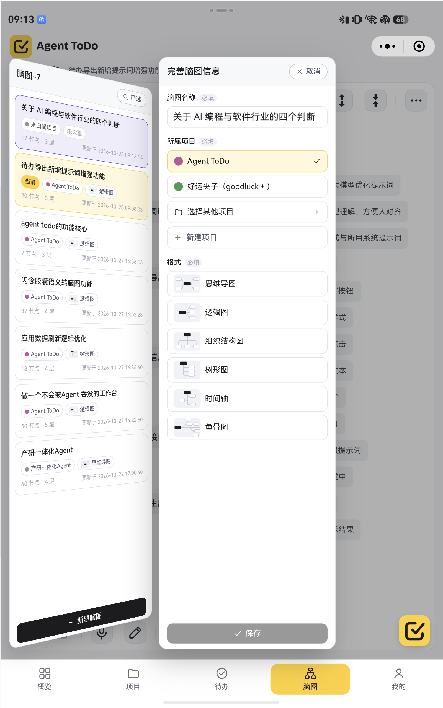
- 标题
- 「完善脑图信息」。同一个面板，只在“字段没填全”时换这个名字。
- 脑图名称
- 必填，已经预填模型起的名字，可以直接改。
- 所属项目
- 必填。选中项下面那行小字是该项目的 agent——agent 由项目决定，所以这一版表单里没有单独的 agent 选项。
- 格式
- 必填（这是“完善态”才有的要求，平时编辑是可空的）。六选一，每项左侧有缩略图。
- 没有「删除」
- 完善态底部只有「保存」。要删这张图，先进画布、从「···」里删。
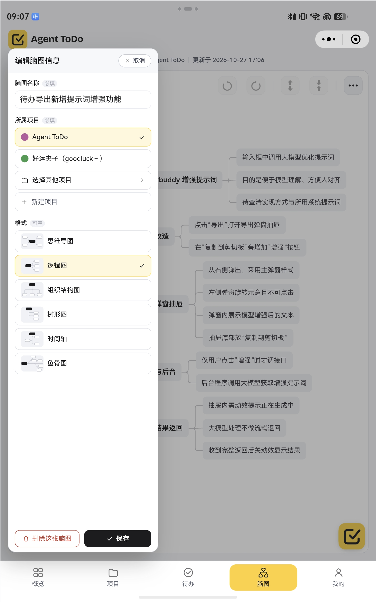
- 标题
- 「编辑脑图信息」——改的是已经存在的一张图。
- 格式「可空」
- 允许清空。空着的时候卡上显示「未设置」，不替你兜一个默认格式。
- 选择其他项目 / ＋ 新建项目
- 项目多到一屏放不下时走这条；新建项目就地开第二层抽屉，不丢当前填写。
- 删除这张脑图
- 左下红字，与保存分开摆。删掉的是整张图，挂过它的待办会变成“未关联脑图”。
- 保存
- 黑色实心长条，右下。名称或项目为空时置灰。
我的
「我的」不是设置页，是资源台账：你挂了几个 Agent、每个 Agent 的套餐额度还剩多少天、 手上有几个项目、Token 余额够不够。项目里那个“距离重置 30 天”就是从这里来的。
操作流程
- 进「我的」：平板点底部第五个 tab，PC 点左栏最后一个图标。
- 改个人资料：点「个人资料」卡右侧「✎ 编辑」，改头像与昵称。昵称会显示在项目、Agent 的关联信息里。
- 管 Agent：点区块右上「＋ 新建 Agent」新增一个；每张卡片右上「✎ 编辑」改名称、每月套餐额度。
- 看配额：卡片左侧圆环是“距离重置还剩几天”，右侧「每月套餐 4000」是本周期额度。
- 管 Token：点「＋ 添加 API」，填服务商与 Key；卡片上能看到余额和密钥尾号。
- 留意红色提示：余额不足时右下角出现「余额偏低」，这是唯一的余额告警方式。
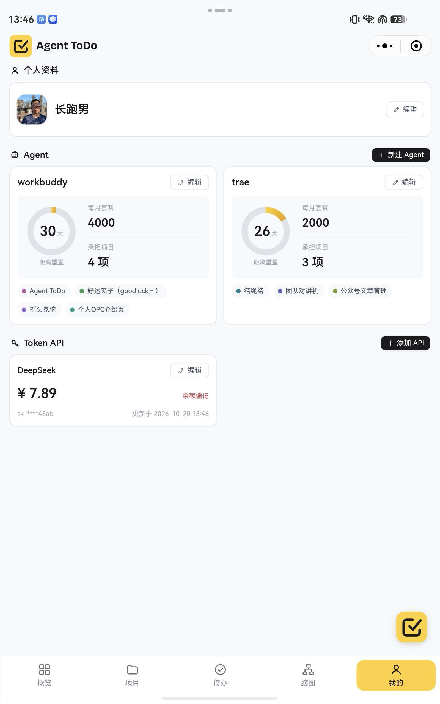
- 个人资料
- 头像＋昵称（图中“长跑男”）＋右侧「编辑」。点编辑改头像与昵称。
- ＋ 新建 Agent
- 黑色小按钮，在 Agent 区块右上角。新增后卡片排在最后。
- Agent 卡
- 名称（workbuddy / trae）＋「编辑」；卡内是配额与承担的项目。
- 配额圆环
- 环内「30 天」是距重置的天数，环的缺口位置表示进度；环下一行小字「距离重置」。
- 每月套餐
- 本周期额度 4000。它不是余额，是每周期重置的总量。
- 承担项目
- 「4 项」＋下面两行项目标签（色点＋名称）。这里只读，改绑定要去项目里编辑。
- Token API 卡
- 服务商（DeepSeek）＋「编辑」；金额「¥7.89」；右下红字「余额偏低」；左下打码的密钥尾号；右上更新时间。
- ＋ 添加 API
- 区块右上角，添加第二家服务商。可以并存多个。

- 左栏高亮
- 「我的」图标黄底，处于当前模块。
- Agent 双列
- 两张卡等宽并排，方便直接比“哪个 Agent 手上的项目多”。
- 项目标签行
- 每个标签是“色点＋项目名”，一行能放下 4 个；更多时会折到下一行。
- Token 卡
- 与平板同构：余额大字、告警红字、密钥尾号、更新时间四件套。
跨端标准流程
把前面五个模块串起来，就是下面这九步。注意第 1 步和第 9 步在时间上往往隔了一夜—— 这套流程的价值，正是让“说不清的十分钟”发生在路上，而不是发生在输入框前。
- ［手机］接住：点底部「说」，说一条 60 秒。不选项目、不标紧急度。图 2-1、图 2-2
- ［手机］补齐：说不完就再来一条；错字左滑“编辑”改掉。图 2-4
- ［平板 / PC］唤出胶囊：点右下徽标，选中要处理的那一条（多选只用于删除和转脑图）。图 2-5、图 2-6
- ［平板 / PC］转待办：正文带入「记一条待办」，补一档紧急度、选一个项目，保存。图 4-1
- ［平板 / PC］建 / 选脑图：新建一张图（选格式）或打开已有的那张。图 5-2
- ［平板 / PC］出方案：拖节点定主干与分支，写备注，改层级。图 5-3
- ［平板 / PC］挂到待办：回待办详情，在「闪念胶囊」空态点「＋ 选择胶囊」，把那几条口述一起挂上去；再在「关联脑图」空态点「＋ 关联脑图」选这张图，顺手在「图片」那格点「＋ 添加图片」补截图。图 4-3、图 4-4
- ［平板 / PC］导出：点「导出」，核对「待办导出」里的预览——原文、图片、脑图层级、关联胶囊四段都在；只想发文字就勾「不含图片」，再点「复制到剪贴板」；嫌原文太像口语就再点「增强」，让模型改写成任务书。图 4-7、图 4-9
- ［任意端］派活：粘进 Agent 输入框，发送。回来把它勾完成，概览的今日计数会 +1。
| 你要做的事 | 手机 | 平板 | PC |
|---|---|---|---|
| 录一条胶囊 | 整页，主操作 | 抽屉内 | 抽屉内 |
| 看活跃度日历 | — | 14 周 | 26 周 |
| 新建项目 / 待办 / 脑图 | — | 抽屉底部黑条 | 抽屉底部黑条 |
| 改脑图结构 | — | 触屏拖拽 | 鼠标拖拽 ＋ 滚轮缩放 |
| 导出适配文本 | — | 详情页「导出」 | 详情页「导出」 |
| 管 Agent / Token | — | 我的 | 我的 |
名词与手势
名词
| 词 | 在这套产品里的确切含义 | 容易混的地方 |
|---|---|---|
| 闪念胶囊 | 一条 60 秒的口述、或一段手写的短记录（可带 1 张截图），以气泡形式排列 | 它不是待办，故意不挂任何归属；说的和写的进同一份名单 |
| 转待办 / 转脑图 | 胶囊的两个出口：变成一条待办，或进脑图 | 转完原气泡会从名单里消失；转待办在表单里取消则保留。「转脑图」其实还分两条路，见下面的「语义转脑图」 |
| 已删除胶囊 | 胶囊抽屉顶部那张虚框卡，点进去是第二个名单，选中可还原 | 不是独立页面，是同一个抽屉换名单；手机端没有这一档。被「转走」的胶囊不进这里 |
| 项目节点 | 项目所处的生命周期：构思期 / 建设期 / 迭代期 / 暂停期 | 与待办的“紧急程度”完全无关 |
| 紧急程度 | 待办的四档：紧急 / 中等 / 不紧急 / 留置 | 四档都算“在册”，留置不等于完成 |
| 留置 | 先搁着、仍在册、但不安排 | 不是删除，也不是“以后再说”的备注 |
| 综合紧急度 | 把一个项目四档待办按权重折算出的分数 | 只出现在项目详情，是只读读数，不参与筛选 |
| 单级归属 | 一条待办只属于一个项目，不能同时挂两个 | 项目之间不能嵌套，没有子项目 |
| 归属 agent | 这个项目交给哪个 Agent 干（workbuddy / trae） | 可以“不关联”，纯人肉项目也合法 |
| 距离重置 | 离该 Agent 的套餐周期重置还有几天 | 是周期倒计时，不是额度余额 |
| 每月套餐 | 该 Agent 每个周期的额度总量 | 与 Token API 的“余额”是两套账 |
| 当前 | 脑图抽屉里标着“当前”的那张＝右侧画布正在编辑的图 | 不是“最近打开”，是此刻打开 |
| 待办导出 | 待办正文 ＋ 图片 ＋ 脑图层级 ＋ 关联胶囊序列化成的纯 Markdown | 旧名「适配 agent 文本」。不润色、不改写，只是把结构摊平；胶囊段用分隔线不用标题 |
| 关联胶囊 | 把几条口述挂到某条待办上，作为这条活的“原话” | 挂上就从胶囊列表消失；取消关联会回到列表，但不算新增 |
| 语义转脑图 | 把几条胶囊交给大模型，按语义重组成一张新脑图 | 与“挂到已有脑图”是两条路：这条异步、计费、可能失败；那条同步、免费、一条胶囊一个节点 |
| 完善脑图信息 | 补一条「语义转脑图」产物的必填项：归属项目与格式 | 同一个面板，平时叫「编辑脑图信息」，那时格式可空、还多一颗删除 |
| 信息增强 | 把待办的原文交给大模型，改写成一份分好段的任务书 | 用于重组表达，结果需要人工核对；输出只在抽屉里，不写回待办 |
手势
| 手势 | 在哪用 | 结果 |
|---|---|---|
| 点一下 | 全局 | 进入、选中、勾完成；PC 脑图节点另支持双击打开编辑 |
| 左滑 | 手机端胶囊气泡 | 露出 导出 / 编辑 / 删除 三颗竖排键 |
| 点气泡 | 平板 / PC 的胶囊抽屉 | 选中它，右缘竖起五颗键：删除 / 编辑 / 导出 / 转待办 / 转脑图 |
| 横向滑动 | 概览的活跃度日历 | 往左看更早的周（14 周 → 30 周） |
| 按住拖动 | 脑图画布上的节点 | 改父子关系；拖到空白处提升为一级节点。松手即保存 |
| 拖动空白 | 脑图画布 | 平移画布，不改变任何结构 |
| 双指捏合 | 脑图画布 | 缩放。PC 用滚轮代替 |
| 框内滑动 / 滚轮 | 脑图节点的编辑框 | 文字超出高度时只滚框里的字，画布不跟着缩放 |
| 点遮罩 | 抽屉 / 弹层外 | 关闭当前浮层，不保存未提交的填写 |
截图索引
下表按图号顺序列出本手册用到的全部截图。 文件名保留了导出时的端与页面标记，方便替换或重截。